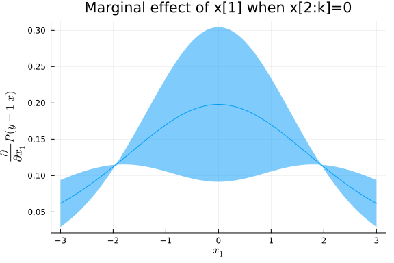

This work is licensed under a Creative Commons Attribution-ShareAlike 4.0 International License
About this document¶
This document was created using Weave.jl. The code is available in on github. The same document generates both static webpages and associated jupyter notebook.
Extremum Estimation¶
Many, perhaps most, estimators in econometrics are extrumem estimators. That is, many estimators are defined by
where $\hat{Q}_n(\theta)$ is some objective function that depends on data. Examples include maximum likelihood,
GMM,
and nonlinear least squares
See Newey and McFadden (1994)1 for more details and examples.
Example: logit¶
As a simple example, let’s look look at some code for estimating a logit.
using Distributions, Optim, BenchmarkTools
import ForwardDiff
function simulate_logit(observations, β)
x = randn(observations, length(β))
y = (x*β + rand(Logistic(), observations)) .>= 0.0
return((y=y,x=x))
end
function logit_likelihood(β,y,x)
p = map(xb -> cdf(Logistic(),xb), x*β)
sum(log.(ifelse.(y, p, 1.0 .- p)))
end
n = 500
k = 3
β0 = ones(k)
(y,x) = simulate_logit(n,β0)
Q = β -> -logit_likelihood(β,y,x)
Q(β0)
234.9547958362917
Now we maximize the likelihood using a few different algorithms from Optim.jl
@btime optimize(Q, zeros(k), NelderMead())
2.030 ms (1510 allocations: 1.98 MiB)
@btime optimize(Q, zeros(k), BFGS(), autodiff = :forward)
693.795 μs (544 allocations: 1.26 MiB)
@btime optimize(Q, zeros(k), NewtonTrustRegion(), autodiff =:forward)
1.243 ms (414 allocations: 1.46 MiB)
* Status: success
* Candidate solution
Minimizer: [9.77e-01, 1.06e+00, 8.77e-01]
Minimum: 2.476225e+02
* Found with
Algorithm: Newton's Method (Trust Region)
Initial Point: [0.00e+00, 0.00e+00, 0.00e+00]
* Convergence measures
|x - x'| = 2.00e-09 ≰ 0.0e+00
|x - x'|/|x'| = 1.88e-09 ≰ 0.0e+00
|f(x) - f(x')| = 5.68e-14 ≰ 0.0e+00
|f(x) - f(x')|/|f(x')| = 2.30e-16 ≰ 0.0e+00
|g(x)| = 2.68e-15 ≤ 1.0e-08
* Work counters
Seconds run: 0 (vs limit Inf)
Iterations: 6
f(x) calls: 7
∇f(x) calls: 7
∇²f(x) calls: 6
Aside: Reverse mode automatic differentiation¶
For functions $f:\R^n \to \R^m$, the work for forward automatic differentiation increases linearly with $n$. This is because forward automatic differentiation applies the chain rule to each of the $n$ inputs. An alternative, is reverse automatic differentiation. Reverse automatic differentiation is also based on the chain rule, but it works backward from $f$ through intermediate steps back to $x$. The work needed here scales linearly with $m$. Since optimization problems have $m=1$, reverse automatic differentiation can often work well. The downsides of reverse automatic differentiation are that: (1) it can require a large amount of memory and (2) it is more difficult to implement. There are handful of Julia packages that provide reverse automatic differentiation, but they have some limitations in terms of what functions thay can differentiate. Flux.jl and Zygote.jl are two such packages.
using Optim, BenchmarkTools
import Zygote
dQr = β->Zygote.gradient(Q,β)[1]
dQf = β->ForwardDiff.gradient(Q,β)
@show dQr(β0) ≈ dQf(β0)
dQr(β0) ≈ dQf(β0) = true
@btime dQf(β0)
24.646 μs (9 allocations: 47.73 KiB)
@btime dQr(β0)
295.366 μs (14720 allocations: 467.53 KiB)
n = 500
k = 200
β0 = ones(k)
(y,x) = simulate_logit(n,β0)
Q = β -> -logit_likelihood(β,y,x)
dQr = β->Zygote.gradient(Q,β)[1]
dQf = β->ForwardDiff.gradient(Q,β)
@show dQr(β0) ≈dQf(β0)
dQr(β0) ≈ dQf(β0) = true
@btime dQf(β0);
6.393 ms (157 allocations: 2.56 MiB)
@btime dQr(β0);
720.332 μs (14721 allocations: 1.21 MiB)
Review of extremum estimator theory¶
This is based on Newey and McFadden (1994)1. You should already be familiar with this from 627, so we will just state some basic “high-level” conditions for consistency and asymptotic normality.
Consistency¶
Theorem: consistency for extremum estimators
Assume
-
$\hat{Q}_n(\theta)$ converges uniformly in probability to $Q_0(\theta)$
-
$Q_0(\theta)$ is uniquely maximized at $\theta_0$.
-
$\Theta$ is compact and $Q_0(\theta)$ is continuous.
Then $\hat{\theta} \inprob \theta_0$
Asymptotic normality¶
Theorem: asymptotic normality for extremum estimators
Assume
-
$\hat{\theta} \inprob \theta_0$
-
$\theta_0 \in interior(\Theta)$
-
$\hat{Q}n(\theta)$ is twice continuously differentiable in open $N$ containing $\theta$ , and $\sup \Vert \nabla^2 \hat{Q}_n(\theta) - H(\theta) \Vert \inprob 0$ with $H(\theta_0)$ nonsingular
-
$\sqrt{n} \nabla \hat{Q}_n(\theta_0) \indist N(0,\Sigma)$
Then $\sqrt{n} (\hat{\theta} - \theta_0) \indist N\left(0,H^{-1} \Sigma H^{-1} \right)$
Implementing this in Julia using automatic differentiation is straightforward.
function logit_likei(β,y,x)
p = map(xb -> cdf(Logistic(),xb), x*β)
log.(ifelse.(y, p, 1.0 .- p))
end
function logit_likelihood(β,y,x)
mean(logit_likei(β,y,x))
end
n = 1000
k = 3
β0 = ones(k)
(y,x) = simulate_logit(n,β0)
Q = β -> -logit_likelihood(β,y,x)
optres = optimize(Q, zeros(k), NewtonTrustRegion(), autodiff =:forward)
βhat = optres.minimizer
function asymptotic_variance(Q,dQi, θ)
gi = dQi(θ)
Σ = gi'*gi/size(gi)[1]
H = ForwardDiff.hessian(Q,θ)
invH = inv(H)
(variance=invH*Σ*invH, Σ=Σ, invH=invH)
end
avar=asymptotic_variance(θ->logit_likelihood(θ,y,x),
θ->ForwardDiff.jacobian(β->logit_likei(β,y,x),θ),βhat)
display( avar.variance/n)
3×3 Array{Float64,2}:
0.00876843 0.00174999 0.00250444
0.00174999 0.00774477 0.00159746
0.00250444 0.00159746 0.0090655
display( -avar.invH/n)
3×3 Array{Float64,2}:
0.00886227 0.00248097 0.00267075
0.00248097 0.00851037 0.00231259
0.00267075 0.00231259 0.00949688
display(inv(avar.Σ)/n)
3×3 Array{Float64,2}:
0.00902585 0.00328116 0.00290569
0.00328116 0.0094098 0.00311304
0.00290569 0.00311304 0.010004
For maximum likelihood, the information equality says $-H = \Sigma$, so the three expressions above have the same probability limit, and are each consistent estimates of the variance of $\hat{\theta}$.
The code above is for demonstration and learning. If we really wanted to estimate a logit for research, it would be better to use a well-tested package. Here’s how to estimate a logit using GLM.jl.
using GLM, DataFrames
df = DataFrame(x)
df[:y] = y
glmest=glm(@formula(y ~ -1 + x1+x2+x3), df, Binomial(),LogitLink())
display( glmest)
StatsModels.TableRegressionModel{GeneralizedLinearModel{GLM.GlmResp{Array{F
loat64,1},Binomial{Float64},LogitLink},GLM.DensePredChol{Float64,Cholesky{F
loat64,Array{Float64,2}}}},Array{Float64,2}}
y ~ 0 + x1 + x2 + x3
Coefficients:
──────────────────────────────────────────────────────────────────
Estimate Std. Error z value Pr(>|z|) Lower 95% Upper 95%
──────────────────────────────────────────────────────────────────
x1 0.797399 0.0853968 9.33758 <1e-20 0.630024 0.964773
x2 1.03246 0.0893601 11.5539 <1e-30 0.857319 1.2076
x3 0.894403 0.0861181 10.3858 <1e-24 0.725614 1.06319
──────────────────────────────────────────────────────────────────
display( vcov(glmest))
3×3 Array{Float64,2}:
0.00729261 0.00204095 0.00169854
0.00204095 0.00798523 0.00230951
0.00169854 0.00230951 0.00741632
Delta method¶
In many models, we are interested in some transformation of the parameters in addition to the parameters themselves. For example, in a logit, we might want to report marginal effects in addition to the coefficients. In structural models, we typically use the parameter estimates to conduct counterfactual simulations. In many situations we are more interested these transformation(s) of parameters than in the parameters themselves. The delta method is one convenient way to approximate the distribution of transformations of the model parameters.
Theorem: Delta method
Assume:
-
$\sqrt{n} (\hat{\theta} - \theta_0) \indist N(0,\Omega)$
-
$g: \R^k \to \R^m$ is continuously differentiable
Then $\sqrt{n}(g(\hat{\theta}) - g(\theta_0)) \indist N(0, \nabla g(\theta_0)^T \Omega \nabla g(\theta_0)$
The following code uses the delta method to plot a 90% pointwise confidence band around the estimate marginal effect of one of the regressors.
using LinearAlgebra
function logit_mfx(β,x)
ForwardDiff.jacobian(β-> map(xb -> cdf(Logistic(),xb), x*β), β)
end
function delta_method(g, θ, Ω)
dG = ForwardDiff.jacobian(θ->g(θ),θ)
dG*Ω*dG'
end
nfx = 100
xmfx = zeros(nfx,3)
xmfx[:,1] .= -3.0:(6.0/(nfx-1)):3.0
mfx = logit_mfx(βhat,xmfx)
vmfx = delta_method(β->logit_mfx(β,xmfx)[:,1], βhat, avar.variance/n)
sdfx = sqrt.(diag(vmfx))
using Plots, LaTeXStrings
Plots.gr()
plot(xmfx[:,1],mfx[:,1],ribbon=quantile(Normal(),0.95)*sdfx,fillalpha=0.5,
xlabel=L"x_1", ylabel=L"\frac{\partial}{\partial x_1}P(y=1|x)", legend=false,
title="Marginal effect of x[1] when x[2:k]=0")

The same approach can be used to compute standard errors and confidence regions for the results of more complicated counterfactual simulations, as long as the associated simulations are smooth functions of the parameters. However, sometimes it might be more natural to write simulations with outcomes that are not smooth in the parameters. For example, the following code uses simulation to calculate the change in the probability of $y$ from adding 0.1 to $x$.
function counterfactual_sim(β, x, S)
function onesim()
e = rand(Logistic(), size(x)[1])
baseline= (x*β .+ e .> 0)
counterfactual= ((x.+0.1)*β .+ e .> 0)
mean(counterfactual.-baseline)
end
mean([onesim() for s in 1:S])
end
ForwardDiff.gradient(β->counterfactual_sim(β,x,10),βhat)
3-element Array{Float64,1}:
0.0
0.0
0.0
Here, the gradient is 0 because the simulation function is a step-function. In this situation, an alternative to the delta method is the simulation based approach of Krinsky and Robb (1986)2. The procedure is quite simple. Suppose $\sqrt{n}(\hat{\theta} - \theta_0) \indist N(0,\Omega)$, and you want to an estimate of the distribution of $g(\theta)$. Repeatedly draw $\theta_s \sim N(\hat{\theta}, \Omega/n)$ and compute $g(\theta_s)$. Use the distribution of $g(\theta_s)$ for inference. For example, a 90% confidence interval for $g(\theta)$ would be the 5%-tile of $g(\theta_s)$ to the 95%-tile of $g(\theta_s)$.
Ω = avar.variance/n
Ω = (Ω+Ω')/2 # otherwise, it's not exactly symmetric due to
# floating point roundoff
function kr_confint(g, θ, Ω, simulations; coverage=0.9)
θs = [g(rand(MultivariateNormal(θ,Ω))) for s in 1:simulations]
quantile(θs, [(1.0-coverage)/2, coverage + (1.0-coverage)/2])
end
@show kr_confint(β->counterfactual_sim(β,x,10), βhat, Ω, 1000)
kr_confint((β->begin
#= none:2 =#
counterfactual_sim(β, x, 10)
end), βhat, Ω, 1000) = [0.04289499999999999, 0.051500000000000004]
# a delta method based confidence interval for the same thing
function counterfactual_calc(β, x)
baseline = cdf.(Logistic(), x*β)
counterfactual= cdf.(Logistic(), (x.+0.1)*β)
return([mean(counterfactual.-baseline)])
end
v = delta_method(β->counterfactual_calc(β,x), βhat, Ω)
ghat = counterfactual_calc(βhat,x)
@show [ghat + sqrt(v)*quantile(Normal(),0.05), ghat +
sqrt(v)*quantile(Normal(),0.95)]
[ghat + sqrt(v) * quantile(Normal(), 0.05), ghat + sqrt(v) * quantile(Norma
l(), 0.95)] = Array{Float64,2}[[0.04441465819074853], [0.04983451027386987]
]
2-element Array{Array{Float64,2},1}:
[0.04441465819074853]
[0.04983451027386987]
References¶
-
Whitney K. Newey and Daniel McFadden. Chapter 36 large sample estimation and hypothesis testing. In Handbook of Econometrics, volume 4 of Handbook of Econometrics, pages 2111 – 2245. Elsevier, 1994. URL: http://www.sciencedirect.com/science/article/pii/S1573441205800054, doi:https://doi.org/10.1016/S1573-441280005-4. ↩↩
-
Itzhak Krinsky and A. Leslie Robb. On approximating the statistical properties of elasticities. The Review of Economics and Statistics, 68:715–719, 1986. URL: http://www.jstor.org/stable/1924536. ↩